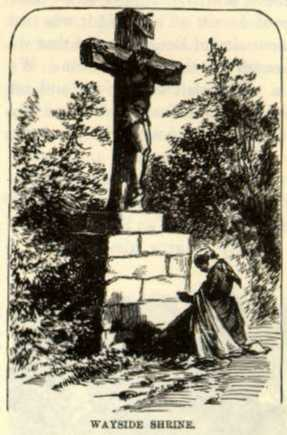

ItalyWe saw interior Italy, now. The houses were of solid stone, and not often in good repair. The peasants and their children were idle, as a general thing, and the donkeys and chickens made themselves at home in drawing-room and bed-chamber and were not molested. The drivers of each and every one of the slow-moving market-carts we met were stretched in the sun upon their merchandise, sound asleep. Every three or four hundred yards, it seemed to me, we came upon the shrine of some saint or other--a rude picture of him built into a huge cross or a stone pillar by the road-side.--Some of the pictures of the Saviour were curiosities in their way. They represented him stretched upon the cross, his countenance distorted with agony. From the wounds of the crown of thorns; from the pierced side; from the mutilated hands and feet; from the scourged body--from every handbreadth of his person streams of blood were flowing! Such a gory, ghastly spectacle would frighten the children out of their senses, I should think. There were some unique auxiliaries to the painting which added to its spirited effect. These were genuine wooden and iron implements, and were prominently disposed round about the figure: a bundle of nails; the hammer to drive them; the sponge; the reed that supported it; the cup of vinegar; the ladder for the ascent of the cross; the spear that pierced the Saviour's side. The crown of thorns was made of real thorns, and was nailed to the sacred head. In some Italian church-paintings, even by the old masters, the Saviour and the Virgin wear silver or gilded crowns that are fastened to the pictured head with nails. The effect is as grotesque as it is incongruous. Here and there, on the fronts of roadside inns, we found huge, coarse frescoes of suffering martyrs like those in the shrines. It could not have diminished their sufferings any to be so uncouthly represented. We were in the heart and home of priestcraft--of a happy, cheerful, contented ignorance, superstition, degradation, poverty, indolence, and everlasting unaspiring worthlessness. And we said fervently, It suits these people precisely; let them enjoy it, along with the other animals, and Heaven forbid that they be molested. We feel no malice toward these fumigators. We passed through the strangest, funniest, undreampt-of old towns, wedded to the customs and steeped in the dreams of the elder ages, and perfectly unaware that the world turns round! And perfectly indifferent, too, as to whether it turns around or stands still. They have nothing to do but eat and sleep and sleep and eat, and toil a little when they can get a friend to stand by and keep them awake. They are not paid for thinking--they are not paid to fret about the world's concerns. They were were not respectable people--they were not worthy people--they were not learned and wise and brilliant people--but in their breasts, all their stupid lives long, resteth a peace that passeth understanding! How can men, calling themselves men, consent to be so degraded and happy. |